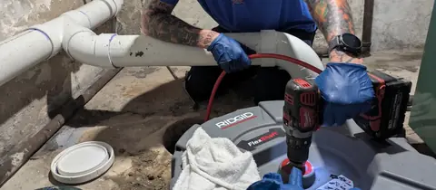
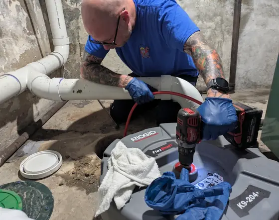
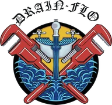
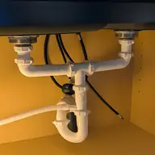
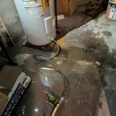
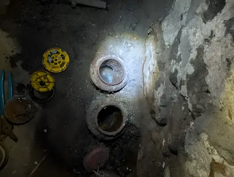
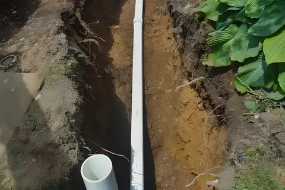
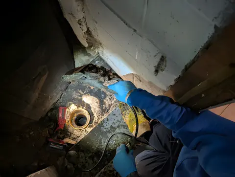
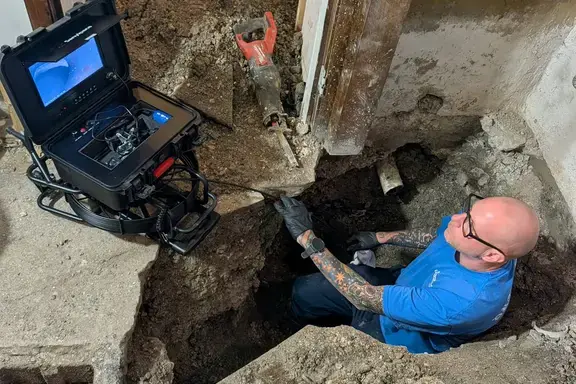

Drain and sewer trouble, handled any hour.
24/7 emergency drain and sewer service from a family-run crew in Duryea, working across Northeastern PA.
Call anytime, day or night(570) 357-4228Or email info@drainflonepa.com
Drain-Flo takes calls 24/7, residential and commercial.


What is your drain doing?
The symptoms usually point to the fix. Here is how Drain-Flo reads them.

One sink, tub, shower or toilet is slow or blocked
Usually a single-fixture clog: hair, wipes, paper, grease or buildup. Drain-Flo starts by identifying the fixture and the symptoms, so the right approach is used without extra mess.
Clog removalMore than one drain is slow, or the basement drain backs up
Your main sewer line may be restricted. Older NEPA properties are more prone to it: aging pipe, shifts over time, debris that settles in low spots.
Sewer line cleaningBackups keep coming back after every cleaning
A broken, shifted or collapsed section can’t be fixed from the inside. Drain-Flo explains what it sees and which options make sense before any major work.
Sewer excavation
Standing water, an overflowing drain, or a sudden sewage smell
That’s an emergency. Call and describe it: which drains, when it started, and whether water backs up anywhere else. It helps them guide you right away.
Emergency service
Recent jobs, photographed on site
See all 15 job photos


From a slow sink to a new sewer line
Residential and commercial, with professional-grade tools: hydro jetting systems and excavation equipment.
Emergency drain service
Fast-response emergency drain service for urgent clogs, backups, and sewer line problems.
Drain cleaning
Professional drain cleaning to restore flow, reduce odors, and help prevent recurring clogs.
Clog removal
Targeted clog removal for sinks, tubs, showers, toilets, and floor drains, fast and effective.
Sewer line cleaning
Sewer line cleaning to clear buildup, improve flow, and help prevent backups in your main line.
Sewer excavation
Excavation for sewer line repairs, replacements, and outdoor drain projects when digging is required.
Camera inspections and more
Video camera inspection to locate problems inside the pipe, hydro jetting, tree root removal and water heater installation.

Eric Gubitoso picks up.
Drain-Flo is locally owned and family-run, launched in 2025 by Eric Gubitoso, a technician with more than a decade of real-world experience in pipe repair, sewer diagnostics and excavation.
The approach is straightforward: honest communication, dependable workmanship and fair pricing.
“Provide reliable service, use the right equipment, and get the system working properly again.”
Late nights, flooded basements, five stars
Read more reviewsEric came to my store late at night and with short notice. He quickly noticed the issue and resolved it. He was very kind and we greatly appreciate his help!!
Excellent experience!! I had an emergency with my sump pump breaking and water in my basement. Made a phone call and Eric came quickly to fix the issue. I was so grateful for the prompt response and fast professional service!! Thank you!!! Highly recommend!!
I called Drain-Flo when I had a very high water bill due to a leak I could not find. Eric showed up the same day and assessed and fixed the leak in a very short amount of time. He also pointed out other issues I didn’t know I had and was very knowledgeable. I’ll be calling them for future plumbing issues definitely.
Google reviews, as shown on drainflonepa.com.
Water where it shouldn’t be? Call now.
Based in Duryea and working across Lackawanna and Luzerne Counties: Duryea, Pittston, Old Forge, Scranton, Wilkes-Barre, Moosic, Avoca and Clarks Summit.
Drain-Flo, 59 Main St, Duryea, PA 18642Not urgent? Email info@drainflonepa.com